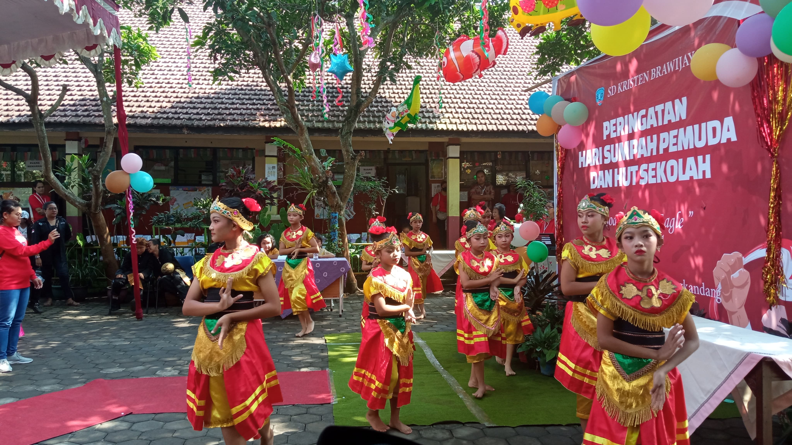
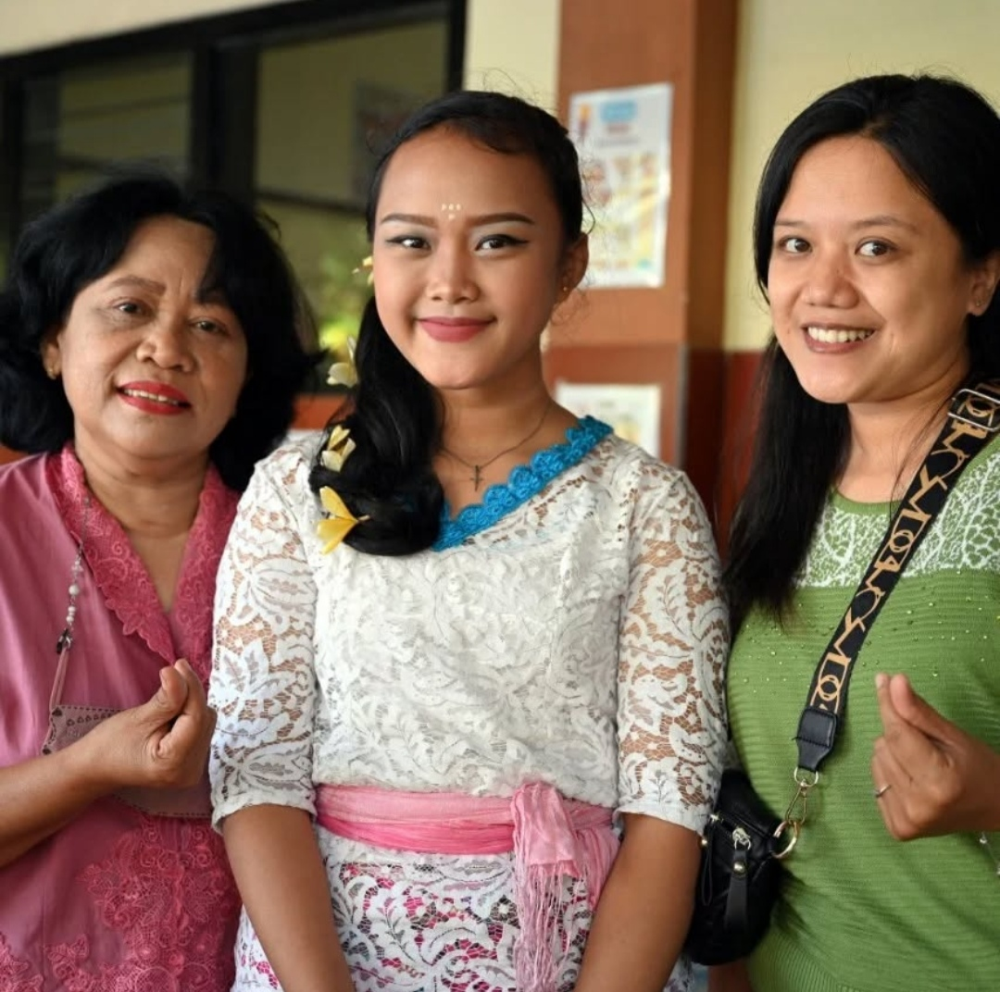
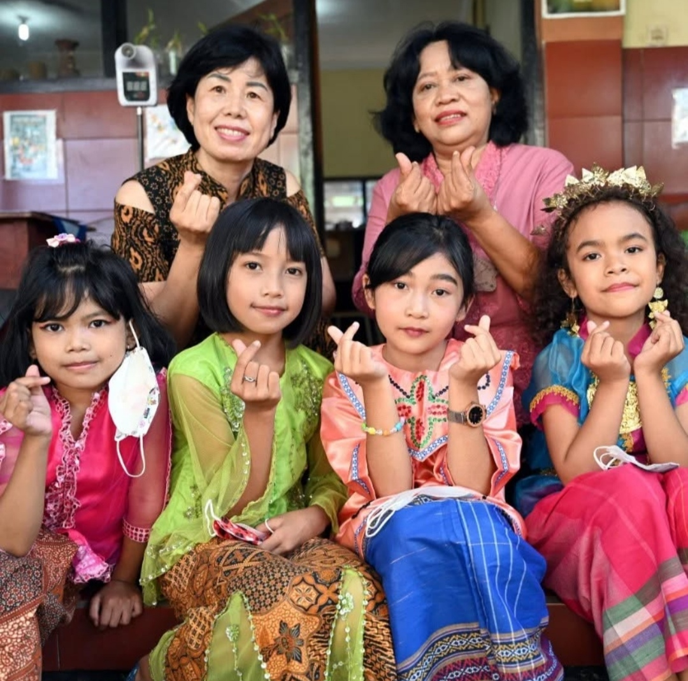
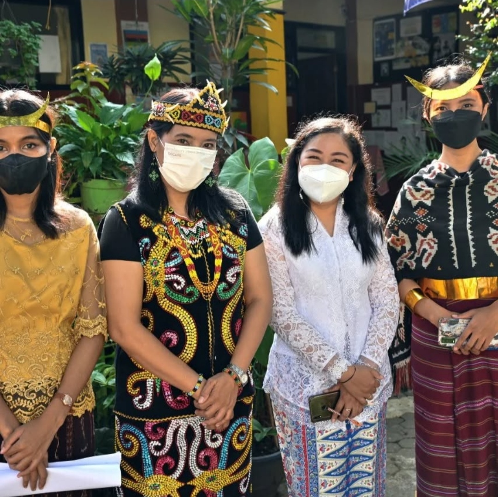
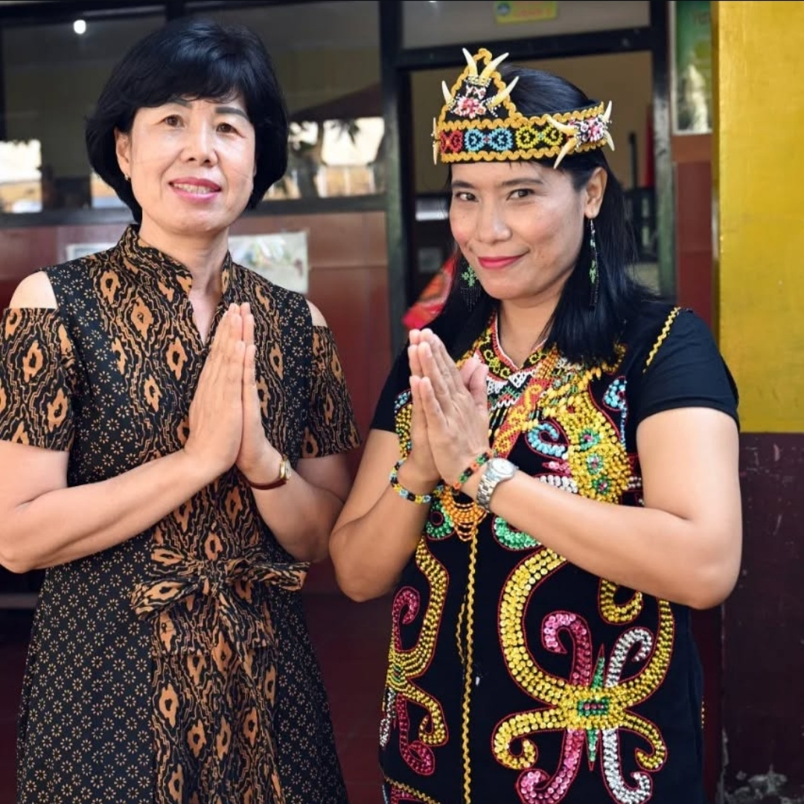

SD Kristen Brawijaya 3 adalah sekolah yang berkomitmen untuk memberikan
pendidikan
berkualitas dengan lingkungan belajar yang nyaman dan inspiratif. Berlokasi strategis di Jl. Ki
Ageng Gribig No. 248, Kedungkandang, Kota Malang, sekolah kami berada di kawasan yang mudah diakses
dan dekat dengan berbagai fasilitas umum, termasuk Puskesmas.
Kami percaya bahwa pendidikan yang efektif tidak hanya bergantung pada metode
pengajaran, tetapi
juga pada kerja sama antara guru, siswa, dan wali murid. Oleh karena itu, kami terus berupaya
menciptakan suasana belajar yang menyenangkan dan interaktif agar siswa tidak merasa bosan dalam
proses pembelajaran.
Sebagai bagian dari komitmen kami untuk mendukung perkembangan kreativitas siswa, SD
Kristen
Brawijaya 3 menerapkan berbagai metode pembelajaran inovatif. Siswa kelas 4-6 mendapatkan pelatihan
membatik kain sebagai bentuk pelestarian budaya, sementara siswa kelas 1-3 diajak untuk membuat
makanan sehat seperti sate dan salad buah, serta mendaur ulang bahan bekas menjadi karya seni yang
menarik. Semua hasil karya siswa dipamerkan dalam berbagai kesempatan, terutama saat kunjungan
donator dari Korea maupun Indonesia.
Kami juga beruntung mendapat dukungan dari perwakilan donator Korea yang berada di
Indonesia, yang
dipimpin oleh Pdt. Woo Hyoje. Program ini telah mendapat persetujuan dan dukungan penuh dari Kepala
Sekolah SD Kristen Brawijaya 3, Ibu Maya Fridayanti, S.Pd. Beliau menegaskan bahwa melalui kegiatan
ini, anak-anak tidak hanya belajar keterampilan baru tetapi juga mengasah kreativitas, inovasi,
serta keaktifan mereka dalam menghadapi tantangan di masa depan.
Dengan visi dan misi untuk mencetak generasi muda yang cerdas, kreatif, dan
inovatif, SD Kristen
Brawijaya 3 terus berkembang menjadi sekolah yang unggul dalam pendidikan karakter dan akademik.
Bergabunglah dengan kami dan jadilah bagian dari perjalanan pendidikan yang menyenangkan dan
bermakna




Alamat : JL. Ki Ageng Gribig 248 Kedungkandang kota Malang | Telepon :
085768654338 | Email : sdkristenbrawijaya3@gmail.com